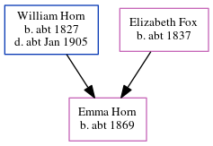

Harriett Horne (née Woods) 1860 -
[ Home ] | [ Calendar ] | [ Surnames Index ] | [ Errors ] | [ Family History ]Harriett Woods, the wife of Thomas Warner Horne (the great-great-uncle of Nigel Horne), was born in Cobham, Surrey, England in 18601 and married Thomas (a brewer's drayman with whom she had 7 children: Ellen, Thomas William, Maria Annie, John Christopher, Rosa Emily, Frederick Sidney and Hilda Alice) in St Pancras, London, England around Nov 18782.
During her life, she was living at Derby Buildings in St Pancras on 3 Apr 18813, at Britannia Street in St Pancras on 31 Mar 19014, and at Derby Buildings in St Pancras on 2 Apr 19115 and on 19 Jun 19211.
Children
- Ellen was born c. 1880
- Thomas William was born on 13 Jun 1881
- Maria Annie was born on 15 Oct 1883
- John Christopher was born on 18 Feb 1886
- Rosa Emily was born on 7 Apr 1888
- Frederick Sidney was born on 19 Sept 1890
- Hilda Alice was born on 27 Jun 1898
Citations
- 1921 Census Of England & Wales - Findmypast (was age 61 and the wife of the head of the household)
- England & Wales Marriages 1837-2005 - Findmypast
- 1881 England, Wales & Scotland Census - Findmypast (was age 20 and the wife of the head of the household)
- 1901 England, Wales & Scotland Census - Findmypast (was age 40 and the wife of the head of the household)
- 1911 Census for England & Wales - Findmypast (was age 50 and the wife of the head of the household)
Family Tree
Map
Generated by ged2site. Last updated on Jul 3, 2024
Known Issues
Census information missing between Census UK 1881 and Census UK 1901